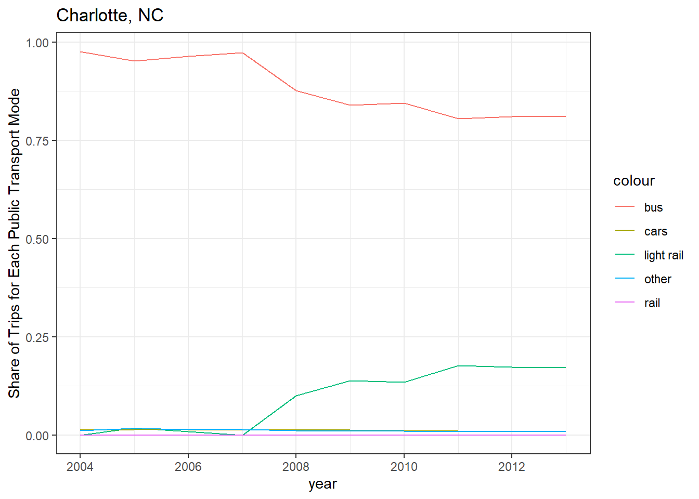
Do Light Rails Provide the Track to Cleaner Air?
Treatment Criteria
As Di et al. (2021) provides data from 2000 to 2016, candidate treatment cities must have light rails that opened from January 2004 to December 2012 in order to have four years of data before and after light rail opening.
Treatment cities must have no increase heavy rail usage in the four years before and after opening window.
| City | Opening Month | Construction | Eval Start | Eval Ends |
|---|---|---|---|---|
| Charlotte, NC | Nov 2007 | Mar 2005 - Nov 2007, Dec 2012 onwards |
Nov 2003 | Nov 2011 |
| Houston, TX | Jan 2004 | March 2001 - Jan 2004, Jan 2014 onwards |
Jan 2000 | Jan 2008 |
| Twin Cities, MN | Jun 2004 | Feb 2001 - Jun 2004 Jan 2010 onwards |
Jun 2000 | Jun 2008 |
| Phoenix, AZ | Dec 2008 | July 2005 - Dec 2008 July 2012 onwards |
Dec 2004 | Dec 2012 |
Control cities
Control cities for Charlotte are cities in South Carolina and North Carolina with no rails and no light rails.
Control cities for Houston are other cities in Texas with no rails, no light rails, and less than 5% of other forms of other transportation in light rail opening year.
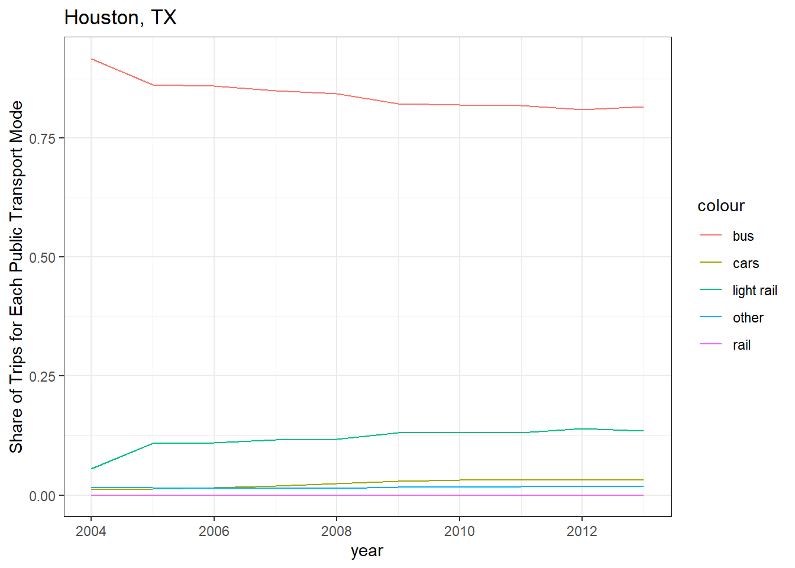
Control cities for the Twin Cities are other cities in Minnesota and Wisconsin with no rails, no light rails, and less than 5% of other forms of other transportation in light rail opening year.
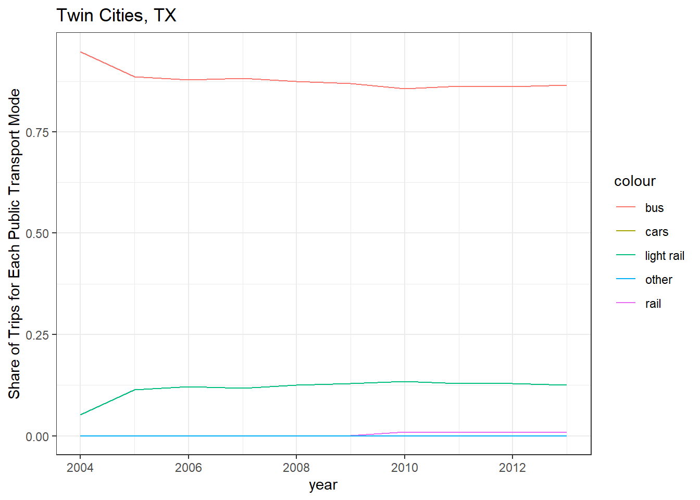
Control cities for Phoenix-Mesa are cities in other Arizona metropolitan areas with no rails and no light rails.
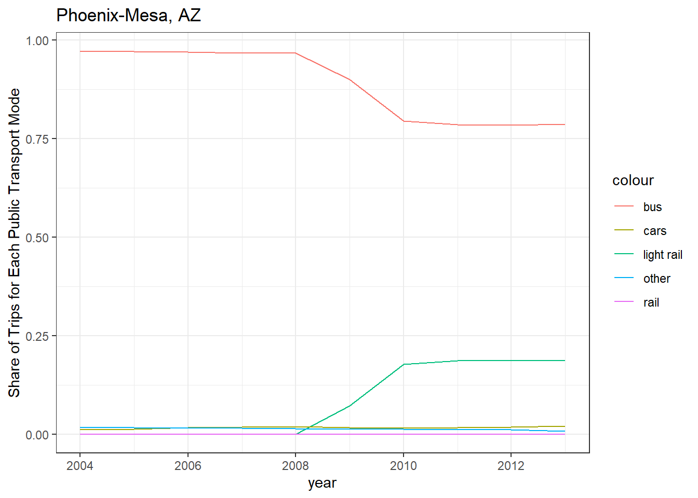
Data
PM2.5
As particulate matter is one of the most damaging air pollutants, we use ground-level PM2.5 concentrations to represent city-level air quality. PM2.5 data comes from Di et al. (2019), which provides daily PM2.5 concentrations in grid cells at a resolution of 1 km for the years 2000 to 2016. We then find the monthly average PM2.5 concentration within a 10 km buffer area around each city’s population centroid for the three treatment cities: Charlotte, Houston, Texas, and Minneapolis-St. Paul. As the Valley Metro Rail connects two cities, Phoenix and Mesa, Arizona, we find the average PM2.5 concentration for the 10 km buffer areas around both cities’ population centroid for each month.
The 10 km radius around the population centroid is the black line, and the 10 km buffer radius around the light rail centroid is the red line.
Warning: package 'maptiles' was built under R version 4.3.2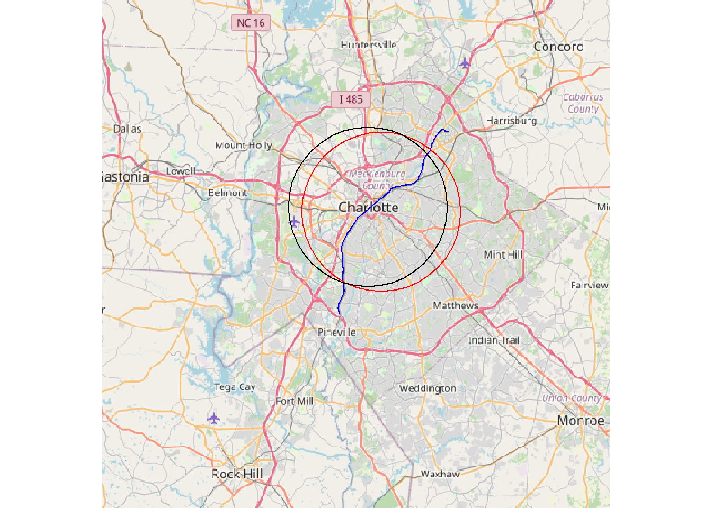
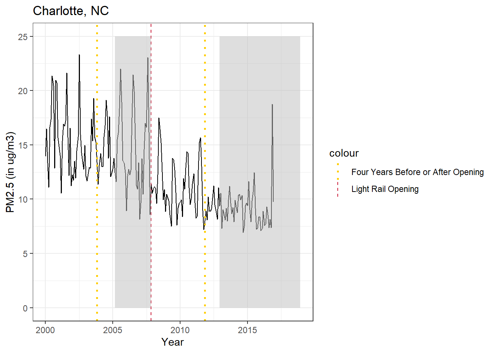
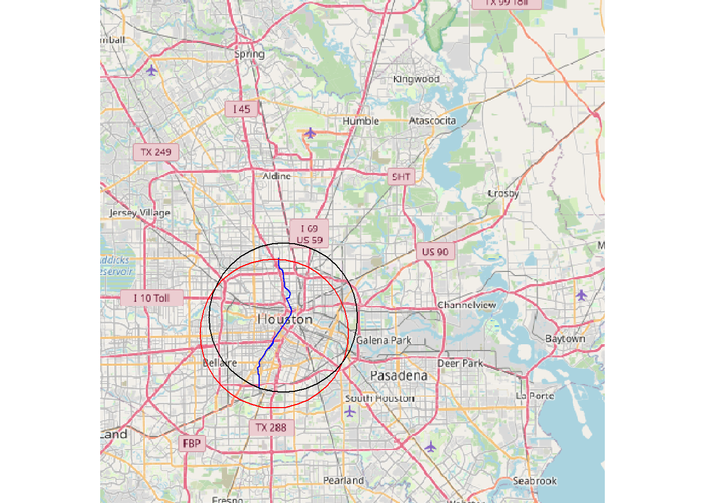
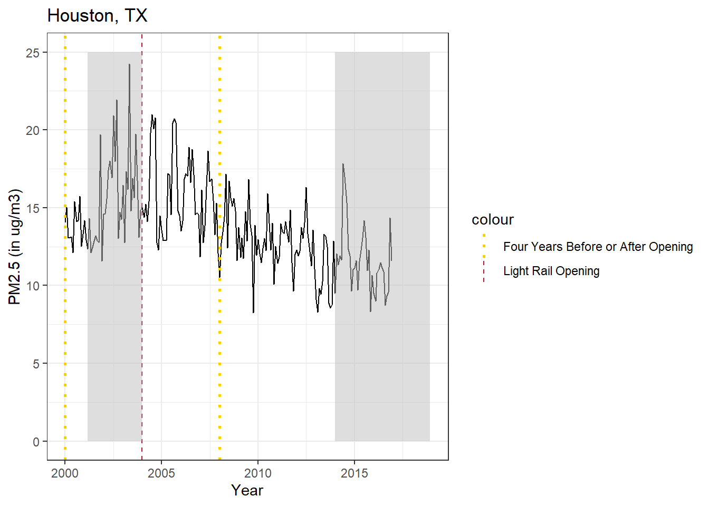
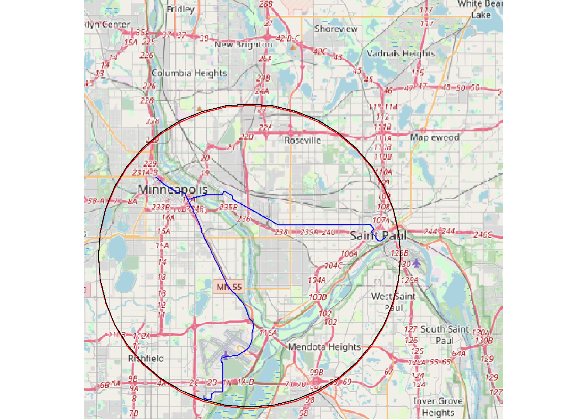
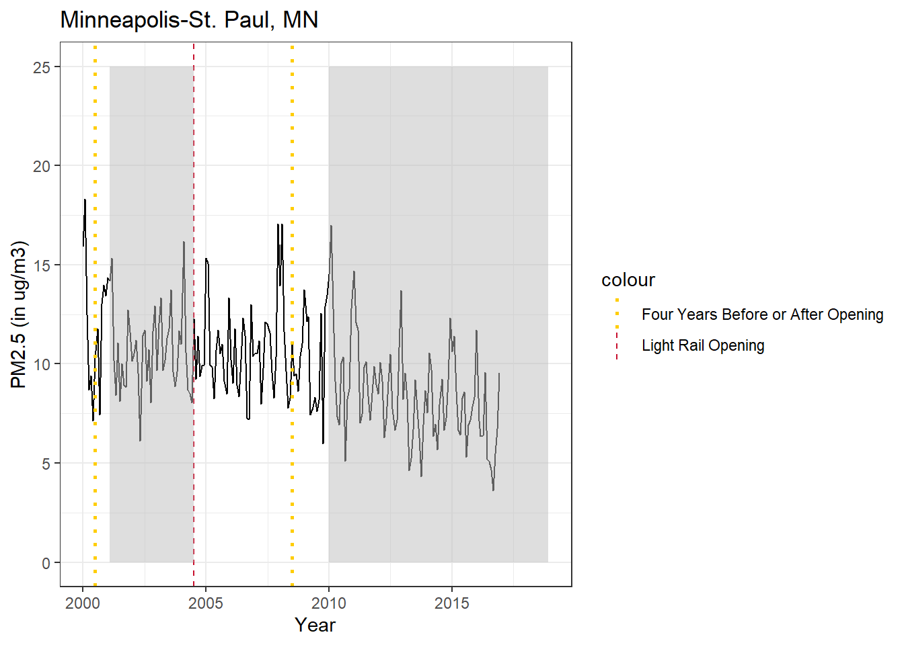
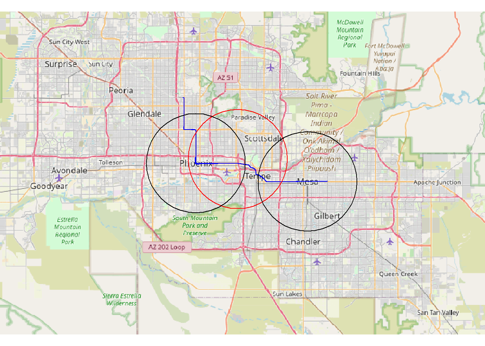
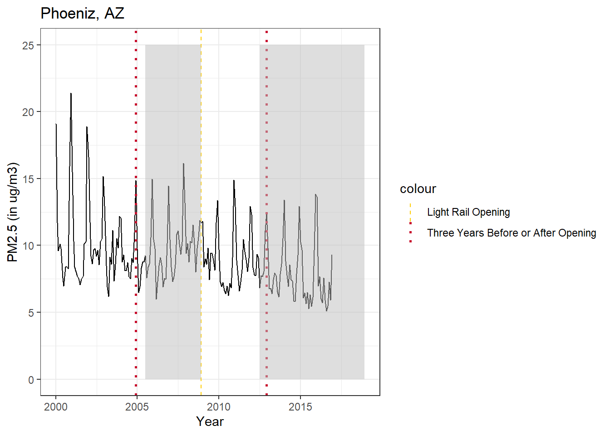
Meteorology
To take into account meteorological conditions, we include total precipitation, snowfall, humidity, air density, wind speed, and air temperature from NASA’s Modern-Era Retrospective Analysis for Research and Applications version 2 (MERRA-2), which provides these meteorological values every day at a grid cell resolution of 0.625 degrees x 0.5 degrees. We then calculate the monthly average values for each meteorological variable within the 10 km buffer areas of treatment and control cities.
Synthetic Control
For each city, we minimized the sum of squared residuals for the time period from Jan 2000 to the beginning of light rail construction.
We omitted results from Houston and the Twin Cities because the pre-construction number of observations is very low.
Charlotte
X1, X0, Z1, Z0 all come directly from dataprep object.
****************
searching for synthetic control unit
****************
****************
****************
MSPE (LOSS V): 0.4990884
solution.v:
0.0002331608 0.1807033 0.01281216 0.06099616 0.0005176617 0.09566328 0.1516587 0.2424662 0.04420588 0.04742142 0.001435258 0.1618868
solution.w:
0.01497714 0.004546717 0.08851375 0.7262575 0.02368774 0.01274948 0.01736156 0.007751335 0.003160997 0.1009938 $tab.pred
Treated Synthetic Sample Mean
PRECTOT 0.000 0.000 0.000
PRECSNO 0.000 0.000 0.000
QSH 0.009 0.009 0.010
RHOA 1.191 1.192 1.192
SPEED 4.881 5.299 5.230
TLML 289.073 288.949 289.571
PRECTOT2 0.000 0.000 0.000
PRECSNO2 0.000 0.000 0.000
QSH2 0.000 0.000 0.000
RHOA2 1.419 1.422 1.422
SPEED2 24.328 28.748 28.121
TLML2 83624.007 83553.296 83909.254
$tab.v
v.weights
PRECTOT 0
PRECSNO 0.181
QSH 0.013
RHOA 0.061
SPEED 0.001
TLML 0.096
PRECTOT2 0.152
PRECSNO2 0.242
QSH2 0.044
RHOA2 0.047
SPEED2 0.001
TLML2 0.162
$tab.w
w.weights unit.names unit.numbers
2 0.015 Asheville, NC 2
3 0.005 Charleston-North Charleston, SC 3
4 0.089 Columbia, SC 4
5 0.726 Concord, NC 5
6 0.024 Durham, NC 6
7 0.013 Fayetteville, NC 7
8 0.017 Greenville, SC 8
9 0.008 Myrtle Beach-Socastee, SC-NC 9
10 0.003 Wilmington, NC 10
11 0.101 Winston-Salem, NC 11
$tab.loss
Loss W Loss V
[1,] 0.005410736 0.4990884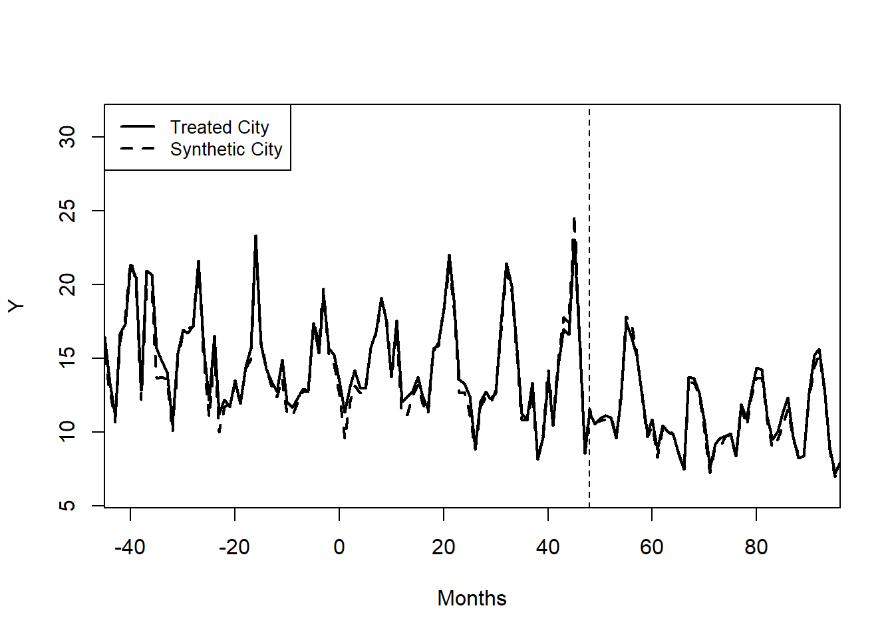
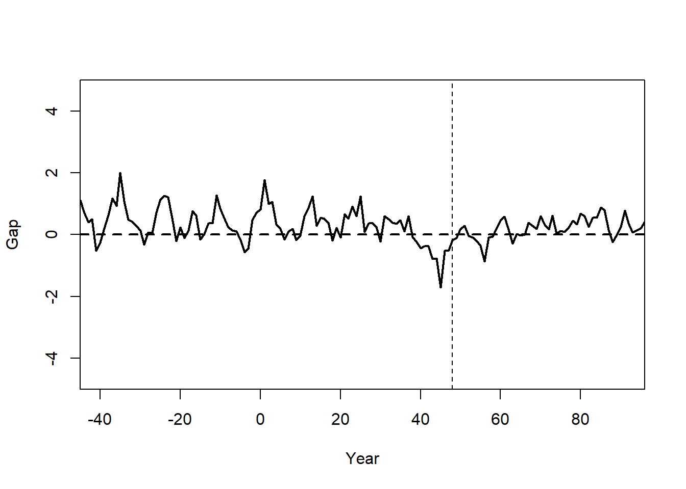
Phoenix-Mesa
X1, X0, Z1, Z0 all come directly from dataprep object.
****************
searching for synthetic control unit
****************
****************
****************
MSPE (LOSS V): 17.55961
solution.v:
0.09007563 0.01064422 0.0004542988 0.164535 0.1501265 0.000399553 0.08557806 0.004826011 0.01675006 0.2821431 0.1489733 0.04549433
solution.w:
2.808e-07 3.501e-07 0.9999994 $tab.pred
Treated Synthetic Sample Mean
PRECTOT 0.000 0.000 0.000
PRECSNO 0.000 0.000 0.000
QSH 0.006 0.006 0.006
RHOA 1.123 1.067 1.029
SPEED 4.756 5.126 5.454
TLML 295.949 292.686 289.489
PRECTOT2 0.000 0.000 0.000
PRECSNO2 0.000 0.000 0.000
QSH2 0.000 0.000 0.000
RHOA2 1.263 1.139 1.061
SPEED2 22.828 26.759 30.427
TLML2 87645.447 85716.409 83867.320
$tab.v
v.weights
PRECTOT 0.09
PRECSNO 0.011
QSH 0
RHOA 0.165
SPEED 0.15
TLML 0
PRECTOT2 0.086
PRECSNO2 0.005
QSH2 0.017
RHOA2 0.282
SPEED2 0.149
TLML2 0.045
$tab.w
w.weights unit.names unit.numbers
2 0 Flagstaff, AZ 2
3 0 Sierra Vista, AZ 3
4 1 Tucson, AZ 4
$tab.loss
Loss W Loss V
[1,] 0.8397809 17.55961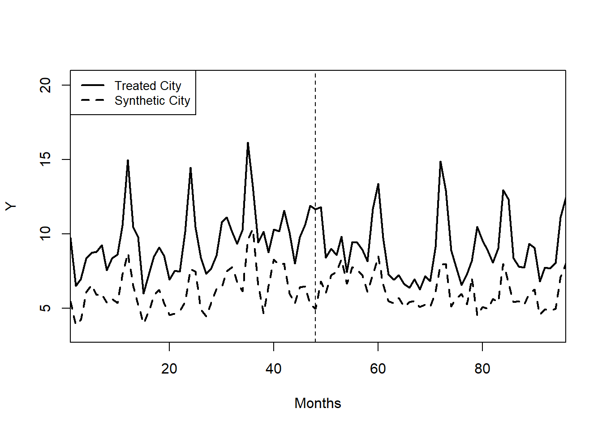
Regressions
Regressions with Charlotte and its 13 control cities.
Column 1 has month and year fixed effects.
Column 2 has month, year, and city fixed effects.
Column 1 has month and year fixed effects.
For all regressions, we restrict data up to 4 years after light rail opening date.
=========================================================================
Dependent variable:
-----------------------------------------------------
ln(PM25)
(1) (2) (3)
-------------------------------------------------------------------------
opentime 0.109** 0.080* 0.107**
(0.053) (0.044) (0.053)
treatcity 0.066*** 0.077***
(0.017) (0.021)
PRECTOT -1,667.143*** -1,228.535*** -1,667.272***
(233.798) (204.808) (233.803)
PRECSNO
QSH -44.141*** -29.350*** -44.190***
(3.709) (4.289) (3.710)
RHOA -9.409 -30.043*** -9.413
(6.586) (7.766) (6.586)
SPEED -0.286*** -0.249*** -0.287***
(0.057) (0.049) (0.057)
TLML -0.335*** -0.407*** -0.336***
(0.084) (0.070) (0.084)
PRECTOT2
PRECSNO2
QSH2
RHOA2 4.090 13.038*** 4.092
(2.765) (2.861) (2.765)
SPEED2 0.021*** 0.011** 0.021***
(0.005) (0.004) (0.005)
TLML2 0.001*** 0.001*** 0.001***
(0.0001) (0.0001) (0.0001)
opentime:treatcity -0.029 -0.031 -0.041
(0.029) (0.024) (0.032)
treatcity:constime -0.034
(0.035)
-------------------------------------------------------------------------
Observations 1,573 1,573 1,573
R2 0.683 0.786 0.683
Adjusted R2 0.676 0.780 0.676
Residual Std. Error 0.157 (df = 1539) 0.130 (df = 1530) 0.157 (df = 1538)
=========================================================================
Note: *p<0.1; **p<0.05; ***p<0.01Regressions with Charlotte and its 3 closely-matched cities from synthetic control.
======================================================================
Dependent variable:
--------------------------------------------------
ln(PM25)
(1) (2) (3)
----------------------------------------------------------------------
opentime 0.070 0.084 0.065
(0.066) (0.065) (0.066)
treatcity -0.040** -0.029
(0.016) (0.019)
PRECTOT
PRECSNO
QSH -33.161*** -28.640*** -33.218***
(6.098) (6.182) (6.098)
RHOA -113.656*** -86.710*** -114.206***
(22.392) (23.228) (22.396)
SPEED -0.248** -0.263*** -0.249**
(0.098) (0.096) (0.098)
TLML -0.282** -0.304*** -0.283**
(0.116) (0.114) (0.116)
PRECTOT2
PRECSNO2
QSH2
RHOA2 47.558*** 39.967*** 47.788***
(9.320) (9.404) (9.321)
SPEED2 0.010 0.012 0.010
(0.009) (0.009) (0.009)
TLML2 0.001*** 0.001*** 0.001***
(0.0002) (0.0002) (0.0002)
opentime:treatcity -0.015 -0.015 -0.025
(0.024) (0.023) (0.026)
treatcity:constime -0.030
(0.029)
----------------------------------------------------------------------
Observations 572 572 572
R2 0.810 0.816 0.810
Adjusted R2 0.798 0.805 0.798
Residual Std. Error 0.116 (df = 539) 0.114 (df = 537) 0.116 (df = 538)
======================================================================
Note: *p<0.1; **p<0.05; ***p<0.01Regressions with Houston and its 13 control cities.
=========================================================================
Dependent variable:
-----------------------------------------------------
ln(PM25)
(1) (2) (3)
-------------------------------------------------------------------------
opentime -0.141*** -0.155*** -0.137**
(0.054) (0.048) (0.054)
treatcity 0.330*** 0.256***
(0.027) (0.049)
PRECTOT -612.465** -1,136.482*** -614.493**
(281.018) (254.271) (280.758)
PRECSNO
QSH -5.762 -4.635 -5.490
(9.871) (9.119) (9.863)
RHOA 25.145*** 20.949** 25.165***
(3.919) (9.544) (3.915)
SPEED -0.262*** -0.062 -0.259***
(0.057) (0.053) (0.057)
TLML -0.011 -0.232** -0.013
(0.110) (0.098) (0.110)
PRECTOT2
PRECSNO2
QSH2 -972.610*** 437.260 -986.514***
(341.044) (330.674) (340.811)
RHOA2 -9.739*** -6.056** -9.748***
(1.719) (3.008) (1.717)
SPEED2 0.015*** 0.003 0.014***
(0.004) (0.004) (0.004)
TLML2 0.00002 0.0005*** 0.00003
(0.0002) (0.0002) (0.0002)
opentime:treatcity -0.003 0.0001 0.071
(0.037) (0.032) (0.055)
treatcity:constime 0.104*
(0.057)
-------------------------------------------------------------------------
Observations 1,261 1,261 1,261
R2 0.569 0.675 0.570
Adjusted R2 0.558 0.664 0.559
Residual Std. Error 0.175 (df = 1229) 0.152 (df = 1218) 0.174 (df = 1228)
=========================================================================
Note: *p<0.1; **p<0.05; ***p<0.01Regressions with the Twin Cities and its 13 control cities.
======================================================================
Dependent variable:
--------------------------------------------------
ln(PM25)
(1) (2) (3)
----------------------------------------------------------------------
opentime 0.058 0.081** 0.055
(0.052) (0.039) (0.052)
treatcity -0.038 0.011
(0.033) (0.063)
PRECTOT 664.640 737.209** 645.639
(478.161) (356.431) (478.666)
PRECSNO
QSH 45.348*** -22.547** 46.039***
(13.090) (10.550) (13.114)
RHOA -80.702*** -50.385** -80.189***
(25.666) (22.644) (25.676)
SPEED -0.232 -0.112 -0.229
(0.177) (0.131) (0.177)
TLML -0.082 -0.091 -0.080
(0.136) (0.101) (0.136)
PRECTOT2
PRECSNO2
QSH2
RHOA2 35.573*** 25.094*** 35.368***
(10.410) (8.633) (10.414)
SPEED2 0.011 -0.002 0.010
(0.012) (0.009) (0.012)
TLML2 0.0003 0.0003* 0.0003
(0.0002) (0.0002) (0.0002)
opentime:treatcity -0.010 -0.021 -0.059
(0.044) (0.033) (0.069)
treatcity:constime -0.065
(0.070)
----------------------------------------------------------------------
Observations 612 612 612
R2 0.527 0.742 0.528
Adjusted R2 0.503 0.727 0.503
Residual Std. Error 0.203 (df = 581) 0.150 (df = 577) 0.203 (df = 580)
======================================================================
Note: *p<0.1; **p<0.05; ***p<0.01Regressions with Phoenix-Mesa, AZ
======================================================================
Dependent variable:
--------------------------------------------------
ln(PM25)
(1) (2) (3)
----------------------------------------------------------------------
opentime
treatcity -0.085 -0.072
(0.057) (0.059)
PRECTOT
PRECSNO
QSH -32.305*** -36.915*** -32.998***
(8.161) (9.082) (8.197)
RHOA -104.592*** -125.495*** -104.608***
(10.229) (21.883) (10.231)
SPEED -0.507*** -0.515*** -0.516***
(0.120) (0.123) (0.121)
TLML -0.006 -0.087 -0.006
(0.136) (0.159) (0.136)
PRECTOT2
PRECSNO2
QSH2
RHOA2 50.452*** 57.609*** 50.459***
(4.860) (7.798) (4.860)
SPEED2 0.046*** 0.047*** 0.047***
(0.010) (0.011) (0.010)
TLML2 0.0001 0.0002 0.0001
(0.0002) (0.0003) (0.0002)
opentime:treatcity -0.051 -0.051 -0.066*
(0.036) (0.036) (0.040)
treatcity:constime -0.037
(0.041)
----------------------------------------------------------------------
Observations 624 624 624
R2 0.765 0.766 0.765
Adjusted R2 0.752 0.752 0.752
Residual Std. Error 0.181 (df = 591) 0.181 (df = 589) 0.181 (df = 590)
======================================================================
Note: *p<0.1; **p<0.05; ***p<0.01Regression with all treated and control cities.
Column 1 and 3 have month, year, and city group fixed effects. Standard errors are clustered at the group level.
Column 2 has month, year, and city fixed effects. Standard errors are clustered at the city level.
=========================================================================
Dependent variable:
-----------------------------------------------------
ln(PM25)
(1) (2) (3)
-------------------------------------------------------------------------
opentime 0.039 0.033* 0.041
(0.019) (0.018) (0.023)
treatcity 0.133 0.125
(0.063) (0.054)
PRECTOT -1,277.768* -1,839.200*** -1,277.434*
(451.653) (354.919) (452.910)
PRECSNO
(0.000) (0.000) (0.000)
QSH -34.728 -45.550** -34.722
(45.553) (17.510) (45.517)
RHOA 1.877 -8.542 1.932
(12.676) (15.289) (12.822)
SPEED -0.434** -0.280*** -0.434**
(0.102) (0.080) (0.102)
TLML -0.050 -0.028 -0.051
(0.301) (0.181) (0.302)
PRECTOT2
(0.000) (0.000) (0.000)
PRECSNO2
(0.000) (0.000) (0.000)
QSH2 946.608 2,401.849*** 943.627
(1,908.163) (876.298) (1,915.182)
RHOA2 0.218 6.383 0.195
(5.614) (6.082) (5.674)
SPEED2 0.029** 0.017*** 0.029**
(0.008) (0.006) (0.008)
TLML2 0.0001 0.0001 0.0001
(0.001) (0.0003) (0.001)
opentime:treatcity 0.004 -0.002 0.012
(0.023) (0.045) (0.055)
treatcity:constime 0.015
(0.064)
-------------------------------------------------------------------------
Observations 4,070 4,070 4,070
R2 0.613 0.732 0.613
Adjusted R2 0.610 0.728 0.610
Residual Std. Error 0.224 (df = 4031) 0.187 (df = 4002) 0.224 (df = 4030)
=========================================================================
Note: *p<0.1; **p<0.05; ***p<0.01